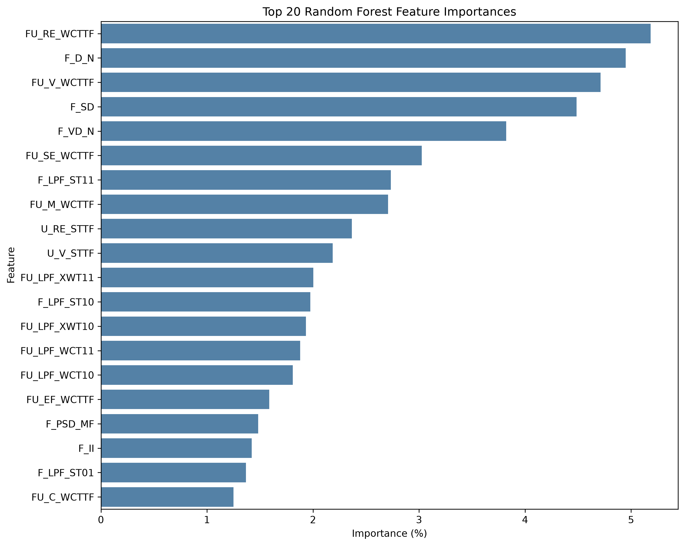

Seven classical supervised models · patient-grouped, leak-free evaluation · JNU-CTG tabular features
Faculty of Engineering, University of Ruhuna
Academic and educational work only. Results are not medical diagnoses or clinical advice.
figo_label).NetFea_0 … NetFea_4 (neural-network latent features)patient_id (grouping only), record_idClick a step, or press play.
record_id, patient_id, figo_labelKeep every column whose name starts with F_, U_ or FU_. The code stops with an error if the count is not exactly 103.
Recordings from one patient look alike. A random split would put one in training and another in testing, which inflates scores. StratifiedGroupKFold (20 parts, seed 42) keeps each patient in one set and keeps the class mix.
| Set | Recordings | Patients | Abnormal |
|---|---|---|---|
| Train | 14,540 | 8,742 | 53.8% |
| Validation | 3,115 | 1,904 | 53.8% |
| Test (held out) | 3,114 | 1,960 | 53.8% |
Average 1.65 per patient. 5,123 patients (41%) have more than one recording; 3,006 have both normal and abnormal recordings.
U_TN has a zero IQR, so automatic capping would erase real values.Capping was better in 2 folds and worse in 3.
F_EF_STTF, U_LPF_ST01 or F_K individually reduced F1 each time.Removed F_Mean, F_BL, U_F (103 → 100 features), unscaled Logistic Regression.
| Validation | 103 | 100 |
|---|---|---|
| Abnormal F1 | 0.7711 | 0.7711 |
| Sensitivity | 74.58% | 74.58% |
| False negatives | 426 | 426 |
3,115 of 3,115 predictions were identical: no benefit.
103 → 55 features, then top-k by mutual information and Random Forest importance. Mean validation F1 over seven models:
class_weight = balanced.Ring = validation F1 on all 103 features. Fixed seed 42 and the same split for every model. Only Random Forest has been tuned so far.
Bars start at 0.50. Hover a bar for details. Positive class = abnormal.
Curve closer to the top-left corner is better. The dashed diagonal is random guessing (AUC 0.5).
Ten largest scaled coefficients of the best model (Logistic Regression, 103 features). A larger absolute value means a stronger push towards the predicted class.

Top 20 impurity-based importances from the baseline Random Forest, trained on the training set only.
| Item | Value |
|---|---|
| Random seed | 42 (split, models, feature ranking) |
| Split | Patient-grouped StratifiedGroupKFold; 14,540 / 3,115 / 3,114 recordings |
| Fitted on training only | Median imputer, StandardScaler, correlation filter, mutual information, RF importance |
| Selection rule | Validation abnormal-class F1; ROC-AUC breaks ties; threshold 0.5 |
| Packages | |
| Scripts and outputs | presentation/supporting/: run_seven_models.py, run_roc_curves.py, result CSV and JSON files |